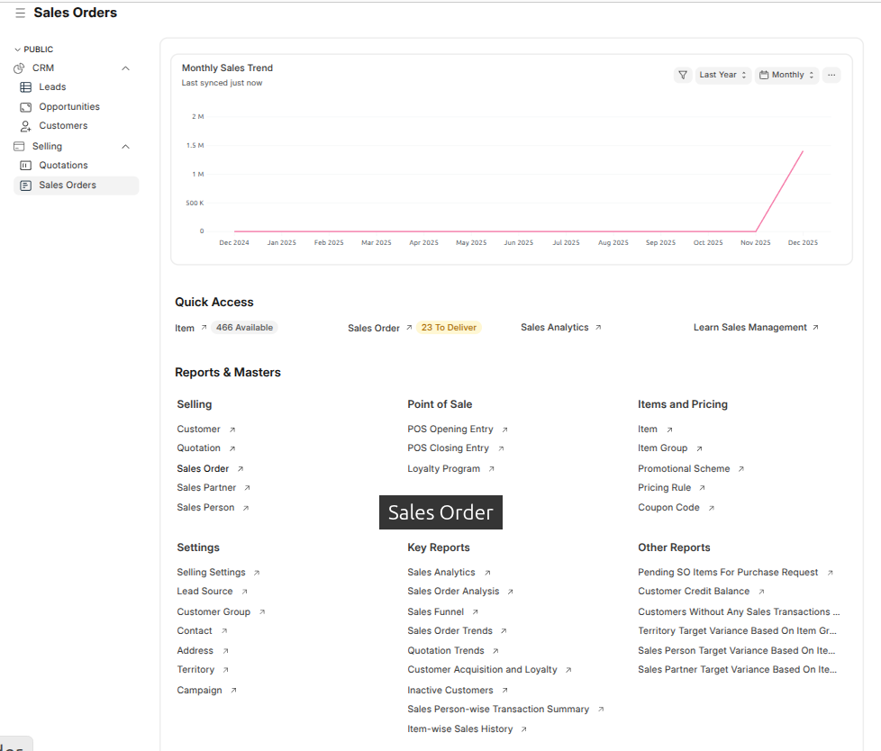
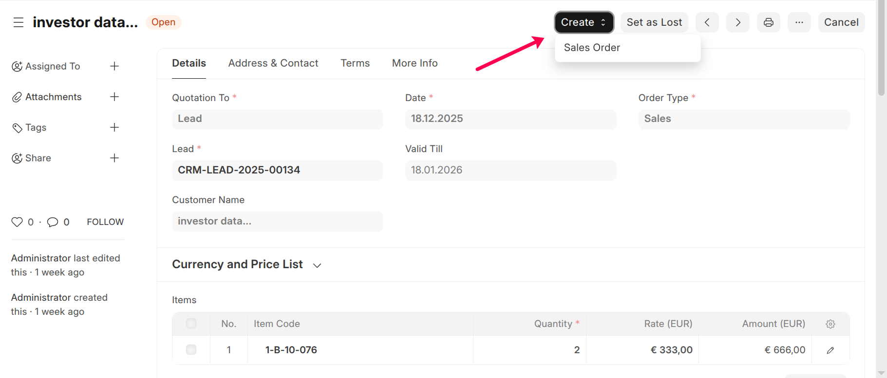

Sales Orders
Sales Orders Workspace
Path: Selling → Sales Orders
The Sales Orders workspace provides visibility into confirmed orders,
monthly sales trends, quick operational access, and reports required to manage
order execution and revenue tracking.

Monthly Sales Trend
This chart displays the monthly sales value generated from confirmed sales orders
for the selected period.
- Tracks revenue growth over time
- Helps analyze order booking trends
- Supports sales forecasting
Quick Access
The Quick Access section provides direct links to commonly
used sales order-related actions.
- Item – View available items
- Sales Order – View sales orders pending delivery
- Sales Analytics – Analyze order and revenue performance
- Learn Sales Management – Access sales learning resources
Note: Quick access visibility depends on user roles and permissions.
Reports & Masters
Selling
- Customer
- Quotation
- Sales Order
- Sales Partner
- Sales Person
Point of Sale
- POS Opening Entry
- POS Closing Entry
- Loyalty Program
Items and Pricing
- Item
- Item Group
- Promotional Scheme
- Pricing Rule
- Coupon Code
Settings
- Selling Settings
- Lead Source
- Customer Group
- Contact
- Address
- Territory
- Campaign
Key Reports
- Sales Analytics
- Sales Order Analysis
- Sales Funnel
- Sales Order Trends
- Quotation Trends
- Customer Acquisition and Loyalty
- Inactive Customers
- Sales Person-wise Transaction Summary
- Item-wise Sales History
Other Reports
- Pending SO Items for Purchase Request
- Customer Credit Balance
- Customers Without Any Sales Transactions
- Territory Target Variance Based on Item Group
- Sales Person Target Variance Based on Item
- Sales Partner Target Variance Based on Item
Note: Access to reports and masters is controlled through
role-based permissions.
Create a Sales Order
Path: From Quotation → Click Create → Sales Order
Path: From Quotation → Click Create → Sales Order

Steps
- Review quotation and item details
- Confirm delivery date and schedule
- Verify taxes, pricing, and terms
- Save and Submit
-
Click Send Email from the confirmation popup to share
the sales order with the customer
Purpose
To officially confirm the customer order and initiate delivery,
billing, and fulfillment processes.
Note: If the customer does not already exist, the system
automatically creates a customer record during sales order creation.
Next Actions
- Create Delivery Notes for order fulfillment
- Generate Sales Invoices
- Track order delivery status
- Analyze sales order trends and performance